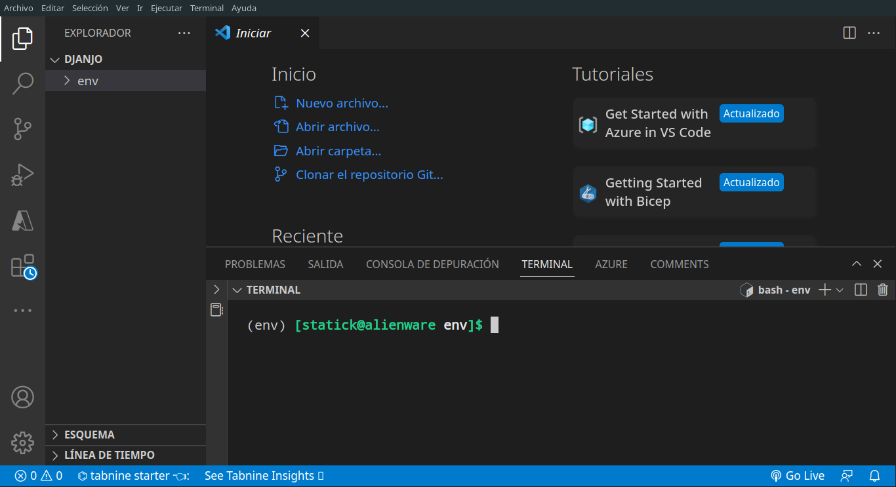
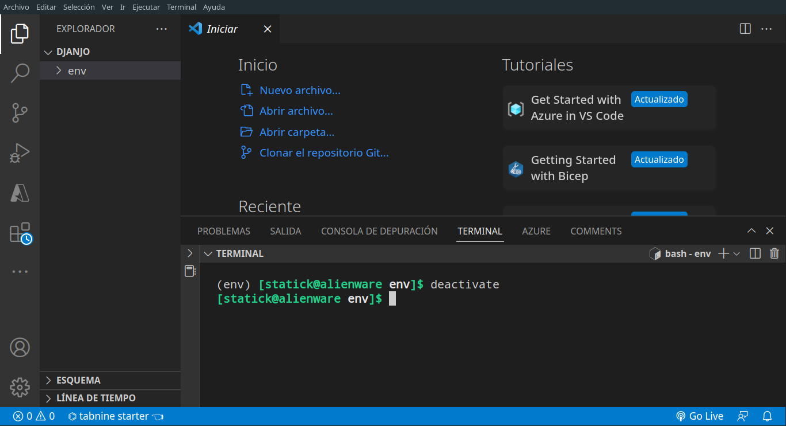
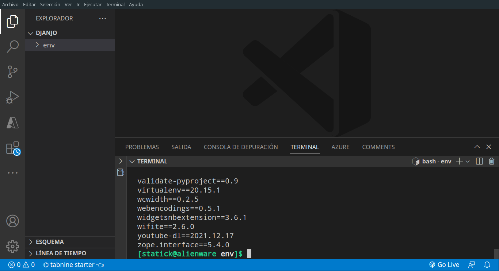
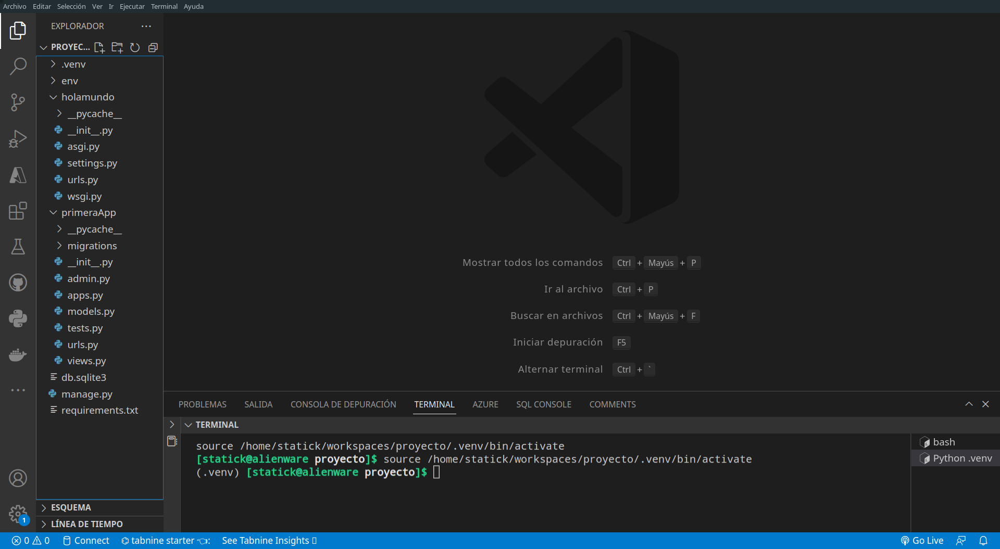
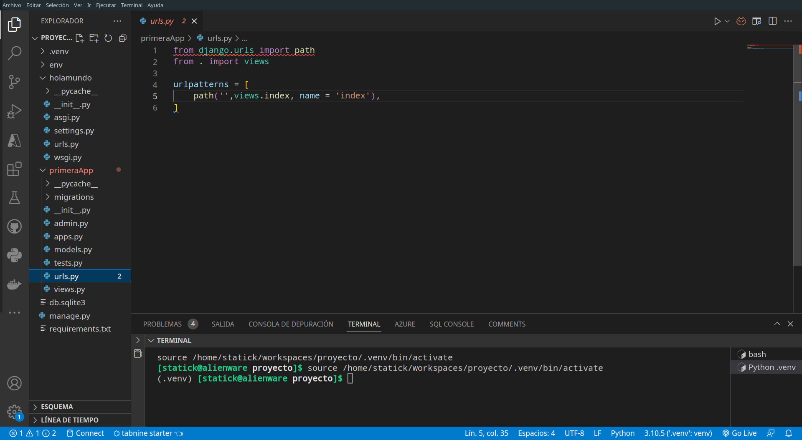
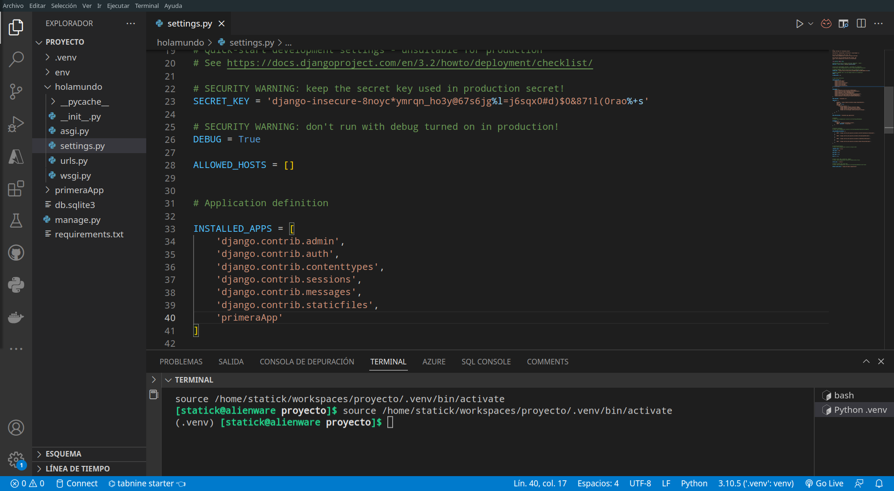
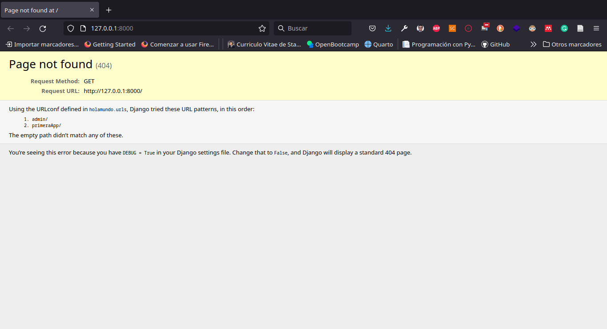
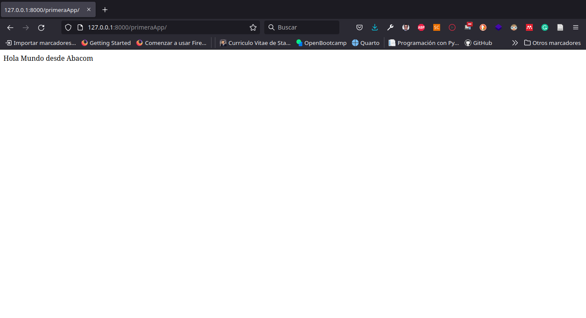

Frameworks con Python
19/7/22
Introducción a Frameworks de Python.
Los frameworks de Python son básicamente una colección de módulos o paquetes que ayudan en la creación de aplicaciones web.

Permiten la automatización de la implementación común de ciertas soluciones requeridas, aumentando así el alcance para los usuarios y dándoles la flexibilidad para concentrarse más en la lógica de la aplicación en lugar de los procesos básicos involucrados en una rutina.

Finalmente haciendo las cosas bastante más fáciles para los entusiastas del desarrollo web, dándoles una estructura adecuada.
Para el desarrollo de aplicaciones, y también proporcionando patrones de uso frecuente en una aplicación web, que son mejores en términos de rendimiento técnico. (Murugesan, 2022)
A continuación se listan algunos de los frameworks de Python.
Django
Pyramid
Circuits.
Watson framework.
Picnic.
TurboGears.
Web2py.
Flask.
Bottle.
Instalando el Django Framework.
Django Framework es una de las herramientas de desarrollo más utilizadas en la actualidad, su facilidad de uso y aprovechando las ventajas del lenguaje de programación python hacen de este framework uno de los más utilizados a la hora de crear soluciones de software a la medida de las empresas.
Antes de instalar se recomienda visitar su sitio oficial djangoproject.com y analizar que nos menciona la documentación oficial.

En la sección Download podemos obtener información necesaria para la instalación del framework de forma local o en un servidor.

Se puede observar que es necesario utilizar el comando pip visto anteriormente, seguido de la opción install y el parámetro Django==4.8.6.
Por lo tanto se hace necesario el uso de la terminal de comando (De preferencia Git Bash o Comand Promt).
Pero antes de ello se sugiere tomar en cuenta algunas recomendaciones previas…
Instalación de Django.
Una vez instalado y activado el entorno virtual, y solo después de ello procedemos a instalar el framework.
Sin embargo, es necesario tomar en cuenta algo muy importante en el tema de desarrollo con este framework y es el soporte que tienen sus versiones. Según la documentación oficial (Django, 2022) es necesario tomar en cuenta la siguiente tabla hasta la fecha consultada.

En la misma se puede apreciar organizado por columnas la fecha de lanzamiento de cada versión y de la misma forma el tiempo de soporte, por ejemplo la versión 3.2 de Django ha sido lanzada en Abril del 2021 y tiene soporte LTS (extendido), hasta el primer trimestre del 2024, por el contrario la versión 4.0 ha sido lanzada en Diciembre de 2022 y tiene soporte hasta el primer trimestre de 2023.
Como desarrollador de este framework, en lo personal sugiero para nuestros desarrollos utilizar las versiones LTS, ya que las mismas pertenezcamos o no al proyecto en el futuro, aseguramos que el mismo tenga un soporte extendido el mismo que implica soporte de bugs, ataques informáticos, parches, entre otros inconvenientes que pueden surgir.
Por lo tanto para este curso se sugiere utilizar la versión 3.2 que tiene soporte hasta el primer trimestre de 2024.
Ahora si vamos a instalar Django.
Paso 1. Verificar si está activado el entorno virtual.

Se puede verificar que está activado el entorno virtual porque la palabra env, el nombre que le asignamos a nuestro entorno virtual (por convención) está al inicio de la terminal encerrado entre 2 paracentesis, como si se tratara de una tupla.
Si en cualquier momento deseamos salir del entorno virtual basta con escribir la palabra deactivate.

Con ello se puede observar que han desaparecido de nuestra terminal la palabra (env).
Paso 2. Instalación del framework Django en su versión 3.2

Paso 3. Comprobamos que se instaló correctamente

Patrón de Arquitectura.
Django por lo general utiliza un Patrón de Arquitectura ligeramente diferente a lo habitual que se puede encontrar en cualquier framework.
Modelo Vista Controlador (MVC - Model View Controller).

Model Template Vista (MTV - Modelo Template View).

Estructura de Archivos.
Realicemos un paseo por por lo que tenemos hasta el momento antes de introducirnos a fondo en el frameworks y su uso.

Creación del Primer Proyecto en Django.
Para crear el primer proyecto lo podemos hacer con el comando django-admin el mismo que permitirá mostrar algunas de las opciones más utilizadas.

Algunas de las opciones más utilizadas con el comando django-admin help son:
makemigrations
migrate
runserver
shell
startapp
startproject
Poco a poco iremos analizando cada una de ellas, por ahora nos interesa el subcomando startproject, ya que el mismo acompañado de django-admin nos permitirá crear un proyecto. Sin más que agregar, vamos a ello.

Empezamos creando un proyecto al que denominamos holamundo el mismo es un proyecto sencillo para poder conocer lo básico y elemental de la arquitectura.
Crear tu primera app.
Para crear tu Primera App en Django es necesario utilizar el siguiente comando:

Una vez creada nuestra Primera App en Django ahora vamos a modificar algunos archivos.
holamundo/primeraApp/views.py

Ahora vamos a crear la ruta para poder devolver la función index a traves del navegador.
holamundo/primeraApp/urls.py
from django.urls import path
from . import views
urlpatterns = [
path('', views.index, name='index'),
]
Ahora será necesario registrar nuestra app en el proyecto.
holamundo/urls.py
Registramos nuestra app en el archivo settings.py
holamundo/settings.py
# Application definition
INSTALLED_APPS = [
'django.contrib.admin',
'django.contrib.auth',
'django.contrib.contenttypes',
'django.contrib.sessions',
'django.contrib.messages',
'django.contrib.staticfiles',
'primeraApp'
]
Probamos nuestro servidor local

Ahora es necesario que nos dirijamos a la URL que hemos creado para la app http://127.0.0.1:8000/primeraApp/

Y con ello conseguimos nuestro primer hola mundo con Django.